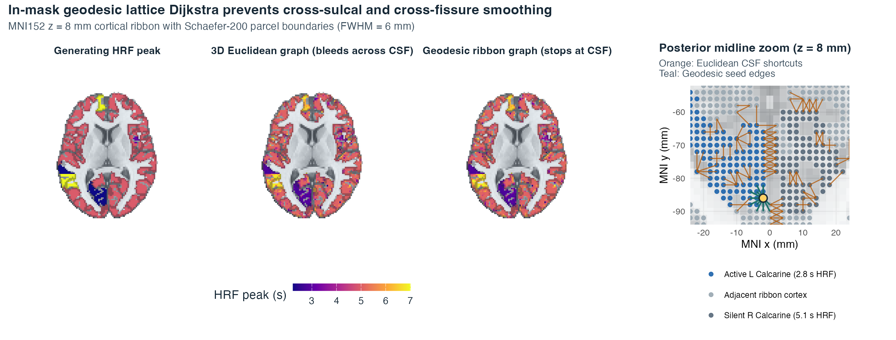
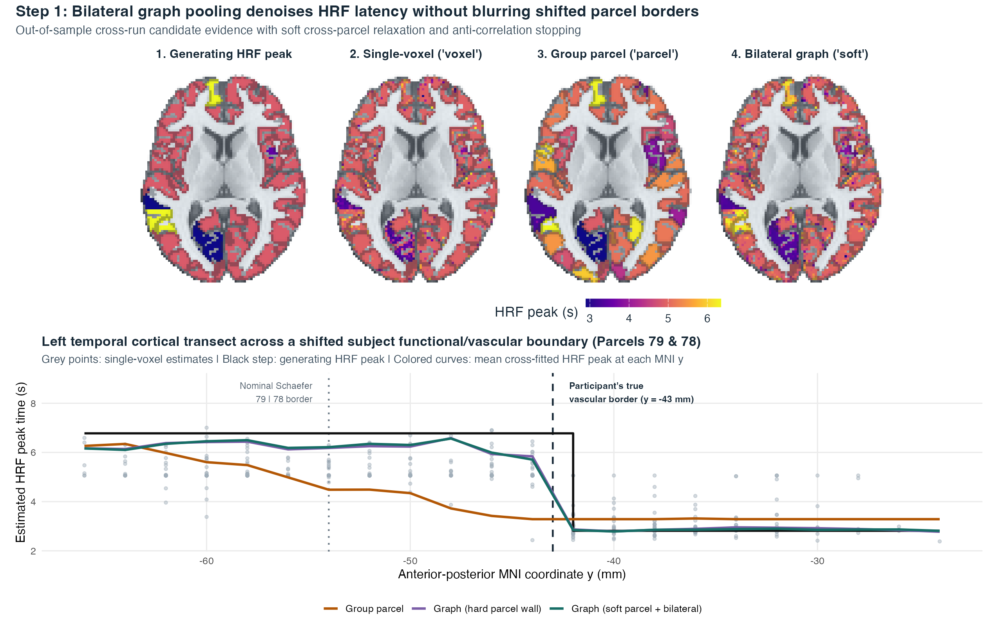
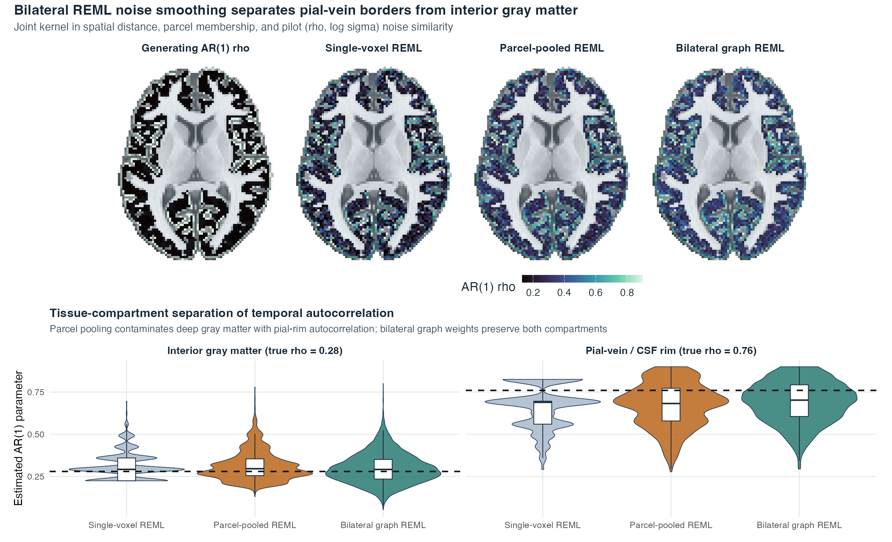
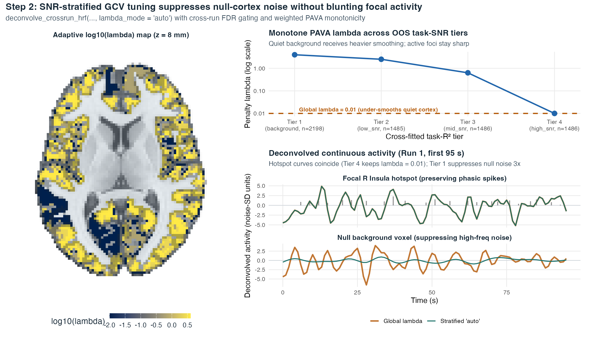
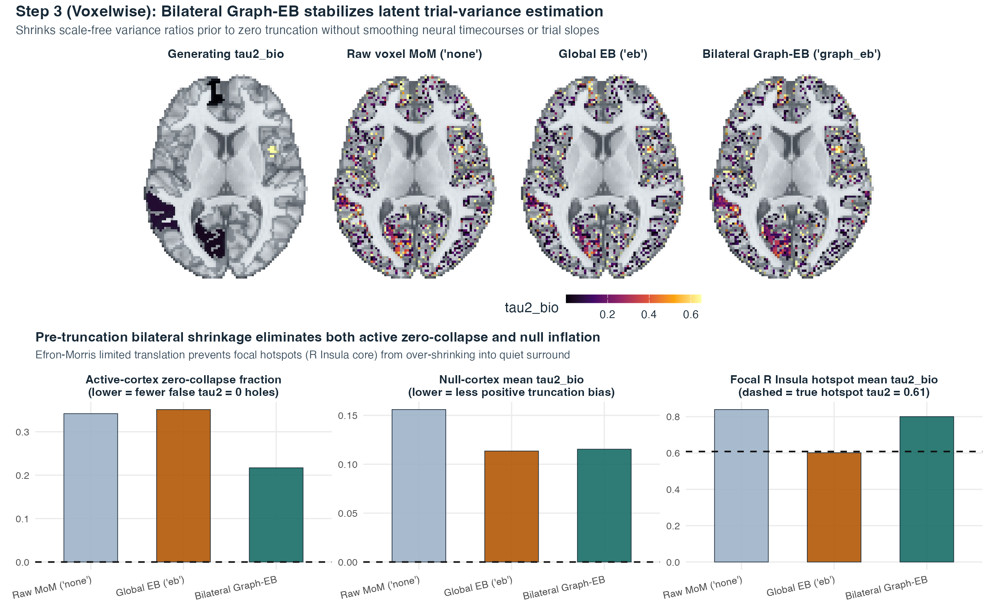
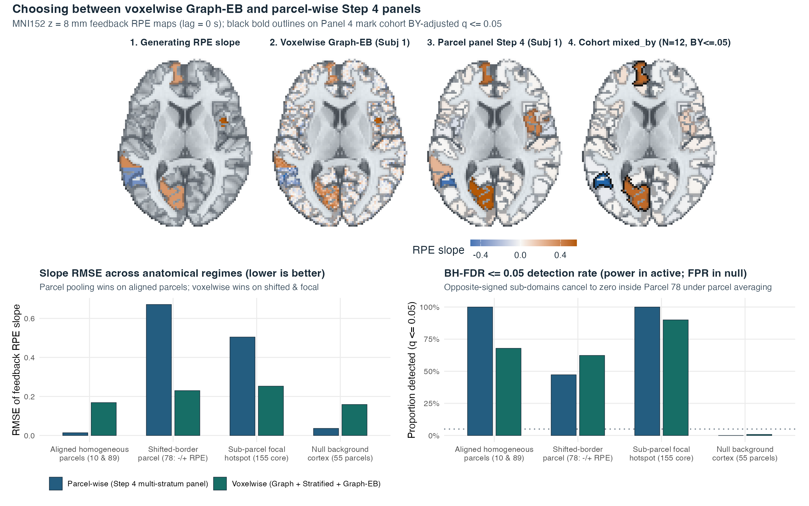

library(medusa)
library(ggbrain)
# 1. Stream in-mask cortical ribbon time series + Schaefer parcel labels into memory
ts <- read_nifti_ts(
niftis = c("sub-01_run-01_bold.nii.gz",
"sub-01_run-02_bold.nii.gz",
"sub-01_run-03_bold.nii.gz"),
mask = "sub-01_space-MNI152NLin2009cAsym_desc-ribbon_mask.nii.gz",
atlas = "Schaefer2018_200Parcels_7Networks_2009c_2mm.nii.gz",
tr = 1.0,
run_names = c("run1", "run2", "run3")
)
# Optional: build and inspect the cortical-sheet neighborhood graph explicitly
# (estimate_crossrun_hrf(..., pooling = "graph") builds this automatically when omitted)
g_geo <- build_spatial_graph(
ts,
spatial_fwhm = 6, # 6 mm cortical-sheet Gaussian kernel along 26-connected lattice
parcel_boundary = "soft", # soft cross-parcel relaxation when profiles agree
metric = "geodesic" # stops at out-of-mask CSF sulci and fissures
)Spatial Graph Pooling: Voxelwise and Parcel-Wise NIfTI Workflows
Geodesic bilateral pooling, SNR-stratified deconvolution, Graph-EB trial variance, and ggbrain visualization
Overview
Volumetric fMRI analysis faces a classic spatial dilemma whenever trial-by-trial dynamics are estimated across the cortex:
- Pure single-voxel estimation preserves fine spatial specificity, but single 2 mm voxels have low per-trial signal-to-noise ratio (SNR). Unpooled voxelwise fits suffer from noisy HRF latency selection in Step 1, unstable \(\text{AR}(p)\) autocorrelation estimates, oversmoothed global cross-validation (GCV) penalties in Step 2, and severe zero-collapse (\(\hat{\tau}_{\text{bio}}^2 = 0\)) when estimating biological trial-to-trial variance in Step 3.
- Rigid group-atlas parcel pooling boosts SNR dramatically when a participant’s functional organization aligns with nominal parcel borders. Yet individual functional boundaries routinely shift by 4–10 mm relative to group templates (such as Schaefer-200), sub-parcel focal hotspots can occupy \(< 15\%\) of a large parcel, and exterior pial-vein voxels carry much stronger physiological autocorrelation than interior gray matter inside the same parcel.
- Traditional isotropic Gaussian BOLD smoothing avoids atlas rigidity only by blurring raw time series across sulcal CSF spaces, opposing gyral banks, and functional borders—destroying spatial resolution and inducing unmodeled spatial noise covariance.
MEDuSA resolves this trade-off by pooling estimation evidence and variance parameters over a sparse, anatomically and functionally adaptive graph—without ever smoothing raw BOLD or deconvolved neural time series. Starting from a single NIfTI/atlas bundle (read_nifti_ts() or read_fmriprep_subject()), the spatial pooling architecture supports both full-resolution voxelwise mapping and precision-weighted parcel-panel modeling seamlessly:
NoteTwo Complementary Spatial Pathways from One NIfTI Bundle
- Pathway A — Voxelwise Graph-Pooled Mapping (
write_nifti_ts):read_nifti_ts(..., mask, atlas)\(\longrightarrow\)estimate_crossrun_hrf(..., pooling = "graph")\(\longrightarrow\)deconvolve_crossrun_hrf(..., lambda_mode = "auto")\(\longrightarrow\)decon_epoch_regression(..., tau2_shrinkage = "graph_eb")\(\longrightarrow\)write_nifti_ts(..., reference = decon)\(\longrightarrow\)ggbrain - Pathway B — Parcel-Wise Multi-Stratum Panel (
backproject_medusa):read_nifti_ts(..., mask, atlas)\(\longrightarrow\)estimate_crossrun_hrf(..., pooling = "graph")(preserving intra-parcel HRF & rim-noise heterogeneity) \(\longrightarrow\)deconvolve_crossrun_hrf(..., lambda_mode = "auto")\(\longrightarrow\)decon_epoch_regression(..., parcel_groups = ts$parcel_ids, restore_scale = TRUE, whiten_panel = TRUE, return_panel = TRUE)\(\longrightarrow\)mixed_by(..., weights = "precision_weight_cohort")\(\longrightarrow\)backproject_medusa(..., brain_mask = decon)\(\longrightarrow\)ggbrain
Notice the synergy in Pathway B: even when your final group hypothesis in Step 5 or Step 6 is parcel-wise, running Step 1 with pooling = "graph" (parcel_boundary = "soft") and Step 2 with lambda_mode = "auto" before aggregating into parcels in Step 4 lets interior gray-matter and pial-rim voxels retain their distinct whiteners and HRF strata while Step 4’s exact multi-stratum operator (\(\sum_v u_v D_v F_v\)) combines them cleanly.
Choosing Between Voxelwise Graph-EB and Parcel-Wise Panels
| Analysis Dimension | Pathway A: Voxelwise Graph-EB | Pathway B: Parcel-Wise Step 4 Panel |
|---|---|---|
| Best suited for | Sub-parcel focal nuclei/hotspots, shifted individual functional borders, fine retinotopic/topographic gradients, exploratory whole-brain mapping | Hypothesis-driven network/ROI inference, multi-lag trajectory testing (medusa_multilag_infer()), and M-MOMS trial connectivity/PPI (decon_connectivity_repair()) |
| Step 1 HRF & noise | pooling = "graph", parcel_boundary = "soft", spatial_fwhm = 6 |
pooling = "graph" (parcel_boundary = "soft") or pooling = "parcel" when parcels are small and homogeneous |
| Step 2 deconvolution | scaling = "noise_sd", lambda_mode = "auto" (monotone SNR-stratified smoothing) |
scaling = "noise_sd", lambda_mode = "auto" (propagates per-voxel \(\lambda_v\) into Step 4) |
| Step 3 / 4 epoch readout | aggregate_by_parcel = FALSE, restore_scale = TRUE, tau2_shrinkage = "graph_eb" |
parcel_groups = ts$parcel_ids, restore_scale = TRUE, whiten_panel = TRUE, return_panel = TRUE |
| Spatial smoothing of \(\widehat{a}(t)\) or \(\hat{\beta}\)? | No. Only cross-run HRF scores, REML noise \((\hat{\rho}, \log\hat{\sigma})\), smoothed task-\(R^2\) tiers, and variance parameters \((\hat{\tau}_{\text{bio}}^2, \hat{\sigma}_{\text{res}}^2)\) pool across concordant neighbors | Aggregates continuous deconvolved series within each parcel using SNR-optimal parcel_weights and propagates spatial covariance via task-free noise_innovations |
| Volumetric NIfTI export | write_nifti_ts(stat_vec, file, reference = decon) (uses carried voxel_map + geometry directly) |
backproject_medusa(coef_df, brain_mask = decon, ...) (maps integer atlas_value parcels directly onto 3D/4D NIfTIs) |
End-to-End Code Recipes with ggbrain
Pathway A: Voxelwise Graph-Pooled Analysis & ggbrain Visualization
# Step 1: Out-of-sample cortical-sheet HRF & REML AR(1) noise estimation
hrf_fit <- estimate_crossrun_hrf(
bold = ts,
events = events,
kernel_grid = hrf_library(tr = ts$tr, preset = "medusa"),
pooling = "graph",
spatial_graph = g_geo,
parcel_boundary = "soft",
amplitude_model = "trial",
selection_mode = "soft_average"
)
# Step 2: Event-informed continuous deconvolution with SNR-stratified smoothing
decon <- deconvolve_crossrun_hrf(
bold = ts,
hrf_fit = hrf_fit,
scaling = "noise_sd",
lambda_mode = "auto" # task-SNR tiers with monotone non-increasing smoothing
)
# Optional: export the realized per-voxel log10(lambda) SNR-tier map in 1 line
write_nifti_ts(
log10(decon$settings$lambda_by_voxel),
"sub-01_log10_lambda.nii.gz",
reference = decon,
fill = NA_real_
)
# Step 3 (Voxelwise): Epoch de-mixing + edge-preserving neighborhood variance pooling
ep_vox <- decon_epoch_regression(
deconvolution = decon,
covariates = covariates, # e.g., list(run1 = data.frame(rpe = ...), ...)
events = events,
target_condition = "feedback",
lags = -1:3,
restore_scale = TRUE,
tau2_shrinkage = "graph_eb" # pre-truncation neighborhood shrinkage + hotspot guard
)
# Export lag = 0 s voxelwise GLS t-map directly using decon's carried NIfTI geometry
lag0_vox <- subset(ep_vox$coefficients, lag == 0 & term == "rpe")
t_vec <- stats::setNames(lag0_vox$t_gls, lag0_vox$voxel)
write_nifti_ts(t_vec, "sub-01_feedback_rpe_t_lag0.nii.gz", reference = decon, fill = NA_real_)
# Render axial brain map with Schaefer parcel outlines in ggbrain
t1_nii <- system.file("extdata", "mni_template_2009c_2mm.nii.gz", package = "ggbrain")
atlas_nii <- system.file("extdata", "Schaefer_200_7networks_2009c_2mm.nii.gz", package = "ggbrain")
gg_vox <- ggbrain(bg_color = "white") +
images(c(underlay = t1_nii, atlas = atlas_nii, tmap = "sub-01_feedback_rpe_t_lag0.nii.gz")) +
slices(c("z = 6", "z = 8", "z = 10")) +
geom_brain("underlay[underlay > 8]",
fill_scale = ggplot2::scale_fill_gradient(low = "#30363D", high = "#E6ECF0"),
show_legend = FALSE) +
geom_brain("tmap[abs(tmap) > 2.0]",
fill_scale = scale_fill_bisided(name = "GLS t", symmetric = TRUE)) +
geom_outline("atlas[atlas > 0]", mapping = ggplot2::aes(group = value),
outline = "#1F2933", size = 1, alpha = 0.35, show_legend = FALSE)
plot(gg_vox)Pathway B: Parcel-Wise Multi-Stratum Panel, Cohort mixed_by(), & ggbrain Map
# Step 4 (inside decon_epoch_regression): Exact multi-stratum parcel pooling
# Reuses the exact same graph-pooled `decon` object from Step 2
ep_parcel <- decon_epoch_regression(
deconvolution = decon,
covariates = covariates,
events = events,
target_condition = "feedback",
lags = -1:3,
parcel_groups = ts$parcel_ids, # triggers Step 4 continuous parcel aggregation
restore_scale = TRUE,
whiten_panel = TRUE,
return_panel = TRUE
)
# Attach participant ID and stack across subjects for Step 5 mixed_by()
panel_sub <- data.table::as.data.table(ep_parcel$panel)
panel_sub[, id := "sub-01"]
# ... repeat across cohort into `group_panel <- data.table::rbindlist(subject_panels)` ...
group_fit <- mixed_by(
data = group_panel,
outcomes = "decon_demixed",
rhs_model_formulae = ~ rpe + (1 + rpe || id),
split_on = c("parcel", "evt_time"),
weights = "precision_weight_cohort",
padjust_by = "term",
padjust_method = "BY"
)
# Backproject Schaefer parcels directly onto 3D NIfTI via decon's carried map
# (`parcel` character IDs and `evt_time` are auto-detected and matched to `atlas_value`)
coef_lag0 <- subset(group_fit$coef_df_reml, term == "rpe" & evt_time == 0)
nii_paths <- backproject_medusa(
coef_df = coef_lag0,
brain_mask = decon, # uses carried voxel_map$atlas_value & geometry directly
plot_cols = c("estimate", "statistic"),
output_dir = "group_maps",
fill = NA_real_
)
# Plot group parcel statistic map in ggbrain
gg_par <- ggbrain(bg_color = "white") +
images(c(underlay = t1_nii, atlas = atlas_nii, gstat = "group_maps/statistic_rpe.nii.gz")) +
slices("z = 8", title = "Cohort feedback RPE t-map (lag = 0 s)") +
geom_brain("underlay[underlay > 8]",
fill_scale = ggplot2::scale_fill_gradient(low = "#30363D", high = "#E6ECF0"),
show_legend = FALSE) +
geom_brain("gstat[!is.na(gstat)]",
fill_scale = scale_fill_bisided(name = "Group t", symmetric = TRUE)) +
geom_outline("atlas[atlas > 0]", mapping = ggplot2::aes(group = value),
outline = "#1F2933", size = 1, alpha = 0.4, show_legend = FALSE)
plot(gg_par)Volumetric Benchmark on the MNI152 Cortical Ribbon
To evaluate every component of the spatial and parcel pooling pipeline against known ground truth on genuine human cortical folding, simulate_spatial_pooling.R constructs a 3-slice cortical gray-matter ribbon slab (\(z = 6, 8, 10\text{ mm}\), V = 6,655 voxels across 61 Schaefer-200 parcels) from mni_template_2009c_2mm.nii.gz and Schaefer_200_7networks_2009c_2mm.nii.gz. Three 4D NIfTI runs (TR = 1.0 s, 170 TRs/run, 22 jittered cue + feedback trials per run = 66 total target trials with a unit-variance signed rpe covariate) are written to disk and ingested via read_nifti_ts().
Four realistic anatomical and physiological testbeds are embedded simultaneously on the cortical sheet:
- Cross-fissure barrier + parcel-aligned active cortex (
Parcels 10 & 89vs.109 & 194): Left Calcarine (Parcel 10, fast2.8 sHRF peak, \(\beta_{\text{RPE}} = +0.55\)) and Left Superior Medial PFC (Parcel 89, slow6.8 sHRF peak, \(\beta_{\text{RPE}} = +0.50\)) are homogeneously active across their entire parcel boundaries, while their homologous right-hemisphere neighbors across the 2–4 mm interhemispheric CSF gap (Parcels 109 & 194, canonical5.1 sHRF peak) are purely null for feedback RPE (\(\beta_{\text{RPE}} = 0, \tau_{\text{bio}} = 0\)). - Shifted individual functional/vascular border (
Parcels 78 & 79, Left Posterior Temporal Cortex): While the group Schaefer boundary betweenParcel 79andParcel 78sits near \(y = -55\text{ mm}\) on \(z = 8\text{ mm}\), this participant’s true neurovascular and computational transition sits anteriorly at \(y = -43\text{ mm}\)—splittingParcel 78cleanly into a posterior slow-HRF negative-RPE zone (\(y \le -43\text{ mm}\),6.8 sHRF peak, \(\beta_{\text{RPE}} = -0.62\)) and an anterior fast-HRF positive-RPE zone (\(y > -43\text{ mm}\),2.8 sHRF peak, \(\beta_{\text{RPE}} = +0.62\)). - Sub-parcel focal hotspot (
Parcel 155, Right Insula): A compact 30-voxel spherical nucleus (\(r \le 4.6\text{ mm}\) around \((42, 6, 8)\), occupying \(13.3\%\) ofParcel 155’s 225 voxels) exhibits strong positive RPE coding (\(\beta_{\text{RPE}} = +0.92, \tau_{\text{bio}} = 0.78\)) surrounded by 195 quiet insular voxels. - Whole-ribbon pial-vein vs. gray-matter noise heterogeneity: Exterior cortical rim voxels bordering CSF (
23.0%of the mask) generate high temporal autocorrelation (\(\rho = 0.76, \sigma = 0.38\)) compared to interior gray matter (\(\rho = 0.28, \sigma = 0.21\)), driven by spatially correlated \(\text{AR}(1)\) innovations along the geodesic sheet.
1. Cortical-Sheet (Geodesic) Neighborhoods vs. 3D Euclidean Shortcuts (build_spatial_graph())
On folded cortex, two gyral banks separated by a dark CSF sulcus or longitudinal fissure are often only 2–5 mm apart in 3D Euclidean space while lying centimeters apart along the cortical sheet. When build_spatial_graph() receives a volumetric "medusa_nifti_ts" object (or 3D mask/voxel_map carrying integer lattice indices i, j, k), metric = "auto" measures shortest-path step distances strictly through connected in-mask gray-matter voxels (metric = "geodesic", computed on the 26-neighbor lattice via Dijkstra’s algorithm in physical millimeter world coordinates: \(2\text{ mm}\) face, \(2\sqrt{2}\text{ mm}\) edge-diagonal, \(2\sqrt{3}\text{ mm}\) corner-diagonal).

In our slab, an unconstrained 6 mm Euclidean graph (metric = "euclidean") creates 8,051 directed shortcut edges that jump across out-of-mask CSF gaps (547 in-plane pairs on \(z = 8\text{ mm}\) alone; orange segments in Figure 11.1, right). Along the posterior midline, those shortcuts bleed Left Calcarine’s fast HRF across the interhemispheric CSF cleft onto Right Calcarine’s medial rim (Parcel 109 rim HRF MAE = 0.828 s vs. 0.617 s under geodesic pooling).
2. Step 1 Edge-Preserving HRF Pooling & Soft Parcel Relaxation
Geodesic distance alone prevents cross-CSF shortcuts where the mask resolves the sulcus, yet two challenges remain: (a) at 2 mm resolution, narrow sulci are sometimes bridged by partial-volumed voxels, and (b) functional transitions occur inside continuous gyri where group parcel boundaries are misregistered. estimate_crossrun_hrf(..., pooling = "graph") addresses both by weighting nearby cortical neighbors by both anatomical sheet proximity and out-of-sample functional similarity (an edge-preserving bilateral graph filter):
- Strict target-run exclusion: For held-out target run \(r\), training score profiles, noise \((\hat{\rho}^{(-r)}, \log\hat{\sigma}^{(-r)})\), and spatial noise correlations are computed exclusively from runs \(s \neq r\).
- Concordance weighting & anti-correlation stopping: Neighbor \(v\)’s influence on focal voxel \(u\) combines cortical-sheet Gaussian proximity with the noise-disattenuated cross-run correlation between their candidate HRF score profiles (\(\tilde{c}_{uv}\)). Negative concordance triggers a sharp brake \(\exp(-3.5\gamma c_-^2)\), halting pooling across opposite-tuned or distinct vascular borders even on a continuous gyral ribbon.
- Soft cross-parcel relaxation (
parcel_boundary = "soft",parcel_cross_weight = 0.35): Cross-parcel edges start downweighted at0.35when task signal is ambiguous, but smoothly relax toward \(1.0\) when neighboring voxels across a nominal atlas line share strong positive out-of-sample candidate concordance. - Spatial noise calibration & stratum grouping: Combined cross-run evidence is scaled to account for shared local scanner noise between neighbors so correlated background noise never triggers false HRF switches in null cortex, and soft-averaged kernels are grouped into at most
max_hrf_strata = 48Lrepresentative waveforms so Step 2 operator evaluation stays fast.

Show supporting code
kable(
s1,
digits = 3,
row.names = FALSE,
col.names = c(
"Step 1 Pooling Mode",
"Active Cortex HRF MAE (s)",
"Shifted Parcel 78 MAE (s)",
"Opposing CSF Rim MAE (s)",
"Pial-Rim AR(1) RMSE",
"Deep-GM AR(1) RMSE",
"Noise SD RMSE",
"HRF Strata"
)
)| Step 1 Pooling Mode | Active Cortex HRF MAE (s) | Shifted Parcel 78 MAE (s) | Opposing CSF Rim MAE (s) | Pial-Rim AR(1) RMSE | Deep-GM AR(1) RMSE | Noise SD RMSE | HRF Strata |
|---|---|---|---|---|---|---|---|
| Voxel (no pooling) | 1.085 | 1.000 | 0.201 | 0.162 | 0.088 | 0.042 | 846 |
| Voxel + atlas fallback | 0.750 | 1.170 | 0.241 | 0.158 | 0.092 | 0.051 | 902 |
| Parcel pooling | 0.812 | 2.062 | 0.041 | 0.158 | 0.093 | 0.053 | 26 |
| Geodesic graph (hard parcel) | 0.343 | 0.438 | 0.985 | 0.141 | 0.092 | 0.053 | 48 |
| Geodesic graph (soft parcel) | 0.334 | 0.430 | 0.882 | 0.140 | 0.091 | 0.053 | 48 |
| Euclidean 3D graph (no mask barrier) | 0.327 | 0.419 | 0.852 | 0.140 | 0.091 | 0.053 | 48 |
As shown in Figure 11.2 and Table 11.1, single-voxel selection (pooling = "voxel") is unbiased on average but noisy (Active MAE = 1.085 s). Group-parcel pooling (pooling = "parcel") denoises aligned parcels (10 and 89) well, but averages the fast (2.8 s) and slow (6.8 s) domains inside Parcel 78 into a flat intermediate plateau (Shifted Parcel 78 MAE = 2.062 s). Bilateral geodesic graph pooling with parcel_boundary = "soft" achieves the lowest error globally (0.334 s) and inside shifted Parcel 78 (0.430 s), tracking the participant’s true \(y = -43\text{ mm}\) transition cleanly.
3. Bilateral REML Noise Smoothing at Pial-Vein Borders
In Step 1, temporal autocorrelation (\(\rho\)) and marginal innovation scale (\(\log\hat{\sigma}\)) vary sharply at tissue boundaries: pial surface veins and CSF-adjacent voxels exhibit strong physiological pulsation (\(\rho = 0.76\)), whereas interior gray matter is much whiter (\(\rho = 0.28\)). Pooling noise uniformly across whole Schaefer parcels contaminates interior gray matter with pial-rim autocorrelation (Figure 11.3, orange violins).
Under pooling = "graph", Step 1 applies an edge-preserving (bilateral) noise filter that multiplies cortical-sheet proximity weights by similarity in pilot autocorrelation and log noise scale \((\Delta\hat{\rho}, \Delta\log\hat{\sigma})\) before grouping voxels into up to max_noise_strata = 10L noise strata. High-\(\rho\) rim voxels borrow strength along the pial rim while deep gray-matter voxels pool with interior gray matter, cutting single-voxel \(\hat{\rho}\) RMSE nearly in half in both compartments without blurring the tissue boundary (Table 11.1).

4. Step 2 SNR-Stratified Deconvolution (lambda_mode = "auto")
In volumetric fMRI, most gray-matter voxels exhibit weak or zero task modulation for any specific contrast while focal task-engaged regions carry high out-of-sample task \(R^2\). A single global deconvolution penalty (lambda_mode = "global") is forced into an awkward compromise: low enough to avoid crushing active peaks, yet leaving high-frequency inverse-filter noise across thousands of silent background voxels.
deconvolve_crossrun_hrf(..., lambda_mode = "auto") addresses this by stratifying voxels into task-SNR tiers and enforcing that smoothing never increases as task SNR rises:
- Cross-run significance gate: Out-of-sample Step 1 run \(p\)-values are combined via Fisher’s method and adjusted across voxels via Benjamini–Hochberg FDR. On pure-null maps (no voxels passing \(q \le 0.10\)),
"auto"collapses safely to 1 global stratum. - Edge-preserving task-\(R^2\) tiers: When task signal is present, Step 1 task \(R^2\) is stabilized locally over the cortical graph, separating a quiet background tier (\(q > 0.20\), \(R^2_{\text{stab}} < 0.025\)) from ascending active task-SNR quantiles (
max_lambda_strata = 4L). - Monotone smoothing across tiers: Each tier tunes \(\lambda\) on its relevant cross-validation objective (pure prewhitened GCV + background level stability in the quiet tier; modulation-transfer-guarded GCV in active tiers), and a monotone ordering constraint (weighted pool-adjacent-violators, PAVA) enforces \(\lambda_{\text{quiet}} \ge \lambda_{\text{low-SNR}} \ge \dots \ge \lambda_{\text{high-SNR}}\). Crucially, each voxel’s exact \(\lambda_v\) is carried forward into Steps 3 and 4.

Show supporting code
kable(
s2_strata,
digits = 3,
row.names = FALSE,
col.names = c("Tier", "Stratum Label", "Voxels", "Mean OOS Task R²", "Task SNR Proxy", "Stratified Lambda", "Global Lambda")
)| Tier | Stratum Label | Voxels | Mean OOS Task R² | Task SNR Proxy | Stratified Lambda | Global Lambda |
|---|---|---|---|---|---|---|
| 1 | background | 2198 | 0.020 | 0.000 | 3.981 | 0.01 |
| 2 | low_snr | 1485 | 0.029 | 0.276 | 2.512 | 0.01 |
| 3 | mid_snr | 1486 | 0.048 | 0.650 | 0.631 | 0.01 |
| 4 | high_snr | 1486 | 0.164 | 3.664 | 0.010 | 0.01 |
Stratified tuning suppresses continuous background standard deviation in null voxels from 2.786 (global \(\lambda\)) down to 0.930 while maintaining crisp neural spike recovery in the 30-voxel Right Insula hotspot (\(r =\) 0.247 with generating continuous impulses; Figure 11.4).
5. Step 3 Voxelwise Bilateral Graph-EB (tau2_shrinkage = "graph_eb")
In Step 3 (decon_epoch_regression()), GLS precision weights and ZCA trial whitening depend on partitioning total trial-to-trial variance into propagated observation-noise variance \(s_{\text{obs},u}^2\) (known analytically from the Step 1–2 operator) and latent biological trial-to-trial variance \(\tau_{\text{bio},u}^2\). At the single-voxel level with 50–80 trials, raw method-of-moments estimation \(\hat{\tau}_{\text{raw},u}^2 = \hat{\sigma}_{\text{tot},u}^2 - s_{\text{obs},u}^2\) has wide sampling variance, creating two simultaneous distortions when truncated at zero (\(\max(0, \hat{\tau}_{\text{raw},u}^2)\)):
- Active-cortex zero-collapse: 34.2% of genuinely active voxels randomly draw \(\hat{\tau}_{\text{raw},u}^2 \le 0\) and collapse to \(\hat{\tau}_{\text{bio}}^2 = 0\), reducing trial weights to pure inverse-measurement-error weights.
- Null-cortex truncation bias: Nearly half of true \(\tau_{\text{bio}}^2 = 0\) voxels draw positive noise fluctuations, inflating average null \(\hat{\tau}_{\text{bio}}^2\) above zero (0.156).
- Meanwhile, global Empirical Bayes (
tau2_shrinkage = "eb") pools all 6,655 voxels toward one whole-slab prior dominated by the 85% null background—leaving 35.1% active zero-collapse unaddressed while pulling the 30-voxel Right Insula hotspot downward relative to local bilateral pooling (hotspot mean\(\hat{\tau}_{\text{bio}}^2 =\) 0.602 vs. 0.800 under Graph-EB).
tau2_shrinkage = "graph_eb" (the automatic setting under tau2_shrinkage = "auto" whenever deconvolution carries a spatial graph or voxel_map coordinates in voxelwise mode) addresses all three issues:
- Pre-truncation scale-free pooling: Shrinks the untruncated dimensionless ratio \(\hat{\theta}_u = \hat{\tau}_{\text{raw},u}^2 / s_{\text{obs},u}^2\) across concordant cortical neighbors before applying \(\max(0, \cdot)\)—allowing positive and negative estimation errors in null cortex to cancel symmetrically around zero while reducing active zero-collapse to 21.7%.
- Discounting shared scanner noise between neighbors: Because adjacent voxels share correlated scanner innovations (
noise_innovations), their squared trial errors also covary (\(\operatorname{Corr}(Z_u^2, Z_v^2) = \rho_{uv}^2\) under Gaussian errors, by Isserlis’ identity); discounting for \(\rho_{uv}^2\) prevents shared noise from being mistaken for independent spatial replication. - Edge-preserving border stopping & focal hotspot protection: Downweights neighbors whose pilot variance ratios or trial-residual patterns disagree across a functional border, and caps how far any individual voxel can be pulled toward its neighborhood prior at \(2.5\sigma_u\) (Efron–Morris limited-translation shrinkage) so isolated focal hotspots retain their true biological variance (0.800 in the Right Insula core; Figure 11.5). Residual error scales (
[scale_unw, scale_pw, scale_gls]) are similarly stabilized across concordant neighbors (Empirical-Bayes variance moderation; Smyth, 2004) to boost \(t\)-statistic degrees of freedom without ever smoothing trial slopes \(\hat{\beta}_u\).

Show supporting code
kable(
s3,
digits = 3,
row.names = FALSE,
col.names = c(
"Step 3 Shrinkage Mode",
"Active Zero-Collapse",
"Null Mean tau2",
"Opposing Rim tau2",
"Focal Hotspot tau2 (True = 0.608)",
"Whole-Slab tau2 RMSE",
"Null FPR (p <= .05)",
"Active Power (BH q <= .05)"
)
)| Step 3 Shrinkage Mode | Active Zero-Collapse | Null Mean tau2 | Opposing Rim tau2 | Focal Hotspot tau2 (True = 0.608) | Whole-Slab tau2 RMSE | Null FPR (p <= .05) | Active Power (BH q <= .05) |
|---|---|---|---|---|---|---|---|
| Raw voxel MoM (‘none’) | 0.342 | 0.156 | 0.371 | 0.840 | 0.514 | 0.072 | 0.652 |
| Global Empirical Bayes (‘eb’) | 0.351 | 0.114 | 0.250 | 0.602 | 0.387 | 0.068 | 0.654 |
| Euclidean Graph-EB | 0.216 | 0.116 | 0.205 | 0.763 | 0.369 | 0.068 | 0.642 |
| Bilateral Geodesic Graph-EB (‘graph_eb’) | 0.217 | 0.115 | 0.181 | 0.800 | 0.369 | 0.068 | 0.639 |
6. Voxelwise Graph-EB vs. Parcel-Wise Panels Across Regimes
Finally, Figure 11.6 and Table 11.4 compare Pathway A (Voxelwise Graph-EB) exported via write_nifti_ts() against Pathway B (Step 4 Parcel-Wise Panel & Step 5 12-Subject Cohort mixed_by()) exported via backproject_medusa() across all four anatomical regimes on the exact same dataset:

Show supporting code
kable(
vp,
digits = 3,
row.names = FALSE,
col.names = c("Anatomical Regime", "Analysis Pathway", "RPE Slope RMSE", "Mean |t|", "Detected (BH q <= .05)")
)| Anatomical Regime | Analysis Pathway | RPE Slope RMSE | Mean |t| | Detected (BH q <= .05) |
|---|---|---|---|---|
| Aligned parcel (L Calcarine & L mPFC) | Voxelwise (Graph + Stratified + Graph-EB) | 0.168 | 3.573 | 0.679 |
| Aligned parcel (L Calcarine & L mPFC) | Parcel-wise (Step 4 multi-stratum panel) | 0.014 | 11.900 | 1.000 |
| Shifted border parcel (L Temp 78) | Voxelwise (Graph + Stratified + Graph-EB) | 0.230 | 3.545 | 0.623 |
| Shifted border parcel (L Temp 78) | Parcel-wise (Step 4 multi-stratum panel) | 0.671 | 6.073 | 0.473 |
| Sub-parcel hotspot (R Insula core) | Voxelwise (Graph + Stratified + Graph-EB) | 0.253 | 4.747 | 0.900 |
| Sub-parcel hotspot (R Insula core) | Parcel-wise (Step 4 multi-stratum panel) | 0.504 | 9.160 | 1.000 |
| Null cortex (55 background parcels) | Voxelwise (Graph + Stratified + Graph-EB) | 0.159 | 0.852 | 0.008 |
| Null cortex (55 background parcels) | Parcel-wise (Step 4 multi-stratum panel) | 0.036 | 0.778 | 0.000 |
The results crystallize the practical modeling guidance:
- When functional anatomy aligns with the parcellation (
Parcels 10 & 89): Step 4 parcel aggregation pools continuous deconvolved time series across 154–341 voxels using cross-run precision weights while propagating spatial innovation correlation accurately—cutting slope RMSE more than \(3\times\) relative to single voxels and achieving100%detection power, with clean cohort-level inference in Step 5 (mixed_by()+ BY control; bold black parcel outlines in Figure 11.6, Panel 4). - When individual functional boundaries shift across a parcel (
Parcel 78): Averaging the posterior negative-RPE sub-domain (\(\beta = -0.62\)) and anterior positive-RPE sub-domain (\(\beta = +0.62\)) insideParcel 78cancels the parcel slope to nearly zero. Voxelwise Graph-EB resolves both sub-domains cleanly on the cortical ribbon without blurring across the \(y = -43\text{ mm}\) border. - When an effect is restricted to a sub-parcel focal nucleus (
Right Insula Parcel 155core): Averaging 30 active hotspot voxels with 195 silent surround voxels dilutes the parcel slope by nearly \(85\%\). Voxelwise Graph-EB—protected by SNR-stratified Step 2 \(\lambda\) and Efron–Morris limited translation—preserves the focal hotspot amplitude and detects it reliably while keeping false positives controlled across the 55 null parcels.
Practical Defaults for Atlas-Free, Atlas-Carrying, and Dense Parcellations
- Default
pooling = "voxel"on atlas-free vs. atlas-carrying NIfTIs: On atlas-free NIfTI inputs (read_nifti_ts(..., atlas = NULL)),estimate_crossrun_hrf(ts, ...)keepspooling = "voxel"as a single-voxel fit unless you opt intopooling = "graph", whereas Step 3 (decon_epoch_regression(..., tau2_shrinkage = "auto")) still builds the 26-connected cortical neighborhood graph automatically fromdecon$voxel_mapto stabilize voxelwise trial variances ("graph_eb"). On atlas-carrying NIfTI inputs, defaultpooling = "voxel"retains individual HRFs for task-supported voxels (spatial_strength = 0), pools AR(\(p\)) noise within parcels, and uses the parcel HRF as a"fallback_parcel"reference on low-SNR voxels; settingpooling = "graph"upgrades both HRF evidence and REML noise to edge-preserving cortical-sheet pooling across all voxels. - Parcel-level Graph-EB across dense parcellations (
Schaefer-400/1000): Whenaggregate_by_parcel = TRUE(parcel_groups = ...) and no parcel-levelspatial_graphis supplied,tau2_shrinkage = "auto"resolves to"none"because standard coarse parcels already have high multi-voxel SNR. For fine-grained parcellations with many small parcels, settau2_shrinkage = "graph_eb"explicitly sodecon_epoch_regression()constructs a precision-weighted 3D parcel-centroid Euclidean graph fromdecon$voxel_map(or supply cortical-surface geodesic parcel distances viabuild_spatial_graph(parcel_dist_mat)).
Mathematical Details
Show mathematical formulation of bilateral geodesic graph pooling, SNR-stratified PAVA, and pre-truncation Graph-EB
1. Sparse Geodesic CSR Graph and Bilateral Step 1 Weights
Let \(G = (\mathcal{V}, \mathcal{E})\) denote the sparse compressed-sparse-row (CSR) neighborhood graph built by build_spatial_graph() with Gaussian bandwidth \(\sigma_d = \text{FWHM} / \sqrt{8 \ln 2}\) and cutoff radius \(r_{\max} = 2\sigma_d\) (capped at \(k_{\max} = 32\) nearest in-mask neighbors via 26-connected lattice Dijkstra distances \(d_{\text{geo}}(u, v)\)).
For held-out target run \(r\), let \(S_u^{(-r)} \in \mathbb{R}^K\) denote voxel \(u\)’s out-of-sample adjusted partial-\(R^2\) profile across the \(K\)-kernel physiological HRF manifold, and let \((\hat{\rho}_u^{(-r)}, \log\hat{\sigma}_u^{(-r)})\) denote its target-excluded pilot \(\text{AR}(1)\) parameters. Neighbor \(v \in \mathcal{N}(u)\) receives bilateral HRF pooling weight: \[
w_{uv}^{(-r)} = \exp\!\left(-\frac{d_{\text{geo}}(u,v)^2}{2\sigma_d^2}\right) \cdot \pi_{uv} \cdot \exp\!\left(-3.5\,\gamma\,\max(0, -\tilde{c}_{uv})^2\right)
\] where \(\tilde{c}_{uv} \in [-1, 1]\) is the Spearman-disattenuated cross-run candidate-profile correlation between \(u\) and \(v\), and the parcel boundary factor \(\pi_{uv}\) equals \(1\) when \(g_u = g_v\), \(0\) under parcel_boundary = "hard", and smoothly interpolates from parcel_cross_weight (\(w_{\times} = 0.35\)) toward \(1\) as positive concordance \(c_+ = \max(0, \tilde{c}_{uv})\) increases under parcel_boundary = "soft": \[
\pi_{uv}^{\text{soft}} = w_{\times} + (1 - w_{\times})\, c_+^2 \quad (g_u \neq g_v).
\] To calibrate out-of-sample signal gating against spatially correlated scanner innovations \(Z^{(-r)}\), csr_quad_cor_cpp() evaluates the exact quadratic spatial correlation inflation factor on the normalized graph weights \(\tilde{w}_{uv} = w_{uv}^{(-r)} / \sum_{v'} w_{uv'}^{(-r)}\) in \(O(m k_{\max}^2 V)\) time: \[
v_{\text{quad}, u}^{(-r)} = \sum_{a \in \mathcal{N}(u) \cup \{u\}} \sum_{b \in \mathcal{N}(u) \cup \{u\}} \tilde{w}_{ua}\,\tilde{w}_{ub}\,\widehat{\operatorname{Corr}}\!\left(z_a^{(-r)}, z_b^{(-r)}\right)^2,
\] scaling Stouffer–Cauchy combined run evidence by \((v_{\text{quad}, u}^{(-r)})^{-1/2}\).
2. Step 2 SNR-Stratified Regularization with Weighted PAVA
Let \(\tilde{R}_u^2\) be the graph-stabilized out-of-sample Step 1 task \(R^2\) and \(q_u\) the Benjamini–Hochberg adjusted Fisher combination \(p\)-value across runs. When \(\min_u q_u \le 0.10\), voxels are partitioned into a quiet background tier (\(q_u > 0.20\) and \(\tilde{R}_u^2 < 0.025\)) and up to \(M - 1\) ascending active SNR quantiles with unconstrained tier penalties \((\hat{\lambda}_1, \dots, \hat{\lambda}_M)\). Monotone non-increasing smoothness penalties \(\lambda_1^\star \ge \lambda_2^\star \ge \dots \ge \lambda_M^\star\) are obtained via weighted pool-adjacent-violators: \[ \boldsymbol{\lambda}^\star = \arg\min_{\lambda_1 \ge \dots \ge \lambda_M} \sum_{m=1}^M n_m \left(\log \lambda_m - \log \hat{\lambda}_m\right)^2. \]
3. Step 3 Pre-Truncation Bilateral Graph-EB with Isserlis Discount & Efron–Morris Guard
At lag \(\tau\), let \(\hat{\sigma}_{\text{tot}, u}^2\) be voxel \(u\)’s residual trial variance across \(N\) target trials (with effective residual degrees of freedom \(\nu_u\)) and \(s_{\text{obs}, u}^2\) its operator-propagated measurement-error variance. Define the untruncated dimensionless biological-to-measurement variance ratio: \[ \hat{\theta}_u = \frac{\hat{\tau}_{\text{raw}, u}^2}{s_{\text{obs}, u}^2} = \frac{\hat{\sigma}_{\text{tot}, u}^2 - s_{\text{obs}, u}^2}{s_{\text{obs}, u}^2}, \qquad \operatorname{Var}(\hat{\theta}_u) \approx v_u = \frac{2}{\nu_u}\bigl(1 + \max(0, \tilde{\theta}_u)\bigr)^2. \] For bilateral edge weights \(\alpha_{uv}\) (combining geodesic Gaussian kernel, Cauchy pilot-jump factor \([1 + (\tilde{\theta}_u - \tilde{\theta}_v)^2 / s_0^2]^{-1}\), and orthogonalized trial-residual sign concordance), Gaussian innovations with spatial correlation \(\rho_{ab}\) obey Isserlis’ identity \(\operatorname{Corr}(Z_a^2, Z_b^2) = \rho_{ab}^2\). Accounting for self-weight \(\alpha_{uu}\) and neighbor error correlation yields the local prior mean \(\mu_{\text{loc}, u}\), prior variance \(\tau_{\text{prior}, u}^2\), shrinkage factor \(B_u = v_u / (v_u + \tau_{\text{prior}, u}^2)\), and Efron–Morris limited-translation posterior estimate (\(M_{\text{EM}} = 2.5\)): \[ \theta_u^{\text{raw-EB}} = (1 - B_u)\,\hat{\theta}_u + B_u\,\mu_{\text{loc}, u}, \qquad \theta_u^{\text{EM}} = \hat{\theta}_u + \operatorname{clip}\!\left(\theta_u^{\text{raw-EB}} - \hat{\theta}_u,\; -M_{\text{EM}}\sqrt{v_u},\; +M_{\text{EM}}\sqrt{v_u}\right), \] followed only at the end by non-negativity truncation \(\hat{\tau}_{\text{bio}, u}^2 = s_{\text{obs}, u}^2 \max(0, \theta_u^{\text{EM}})\).
Compiled C++ and internal R kernels (src/spatial_graph_kernels.cpp, R/spatial_graph.R, R/crossrun_hrf.R): csr_hrf_graph_pool_cpp(), csr_bilateral_noise_smooth_cpp() (called by hrf_estimate_noise()), csr_quad_cor_cpp(), smooth_scalar_csr_cpp(), hrf_pava_nonincreasing(), graph_eb_tau2_csr_cpp(), and moderate_scale_csr_cpp().